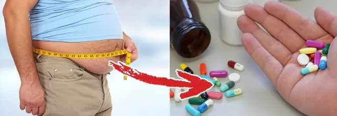
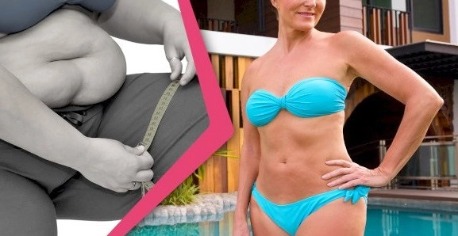

Vége az elhízásnak világszerte! Három fiatal tudós-hős INGYENESEN megmenti az emberiséget az elhízástól
Megdöbbentő esemény Szingapúrban: Egy gyógyszeripari nagyvállalat elnökét KORBÁCSOLÁSRA ÍTÉLTÉK, amiért megpróbálta megakadályozni a történelmi áttörést az orvostudományban
Az egész orvostudományi világ a fiatal zsenik csodálatos sikerétől hangos. Ők hárman a világ legtehetségesebb egyetemistái. Sorsukat összekötötte egy orvostudományi ösztöndíj Szingapúrban. Ott a fiatal tudósok egyesültek, hogy történelmi áttörést érjenek el az emberi egészségért folytatott küzdelemben.
Diego José Gutiérrez (18 éves argentin)
Vancsik Anna (19 éves magyar)
Keiichirō Sanaka (19 éves japán)
Találmányuk mindenkinél tartósan elégeti a felesleges zsírszövetet. Ami fontos: teljesen biztonságosan, az étrend és az életmód megváltoztatása nélkül. Ez a módszer 7 kg-os súlycsökkenést garantál 2 hetenként. – Egyszerűen azt tettük, amit már 45 évvel ezelőtt az orvostudomány tudott és köteles is volt megtenni – hozzáfűzik a fiatal zsenik. Felfedezésüknek köszönhetően Szingapúr, Argentína és Japán már 27 ezer állampolgára 5, 10, 15, 25 kg-ot vagy akár többet is fogyott. Most Magyarországra érkezik!
-
ki az a fiatal magyar lány, aki hozzájárult a túlsúly ellenszerének felfedezéséhez, és ma a nemzeti büszkeségünk
-
milyen cselekedetekre képes volt az amerikai gyógyszeripari nagyvállalat elnöke, hogy a szingapúri bíróság korbácsolásra ítélte
-
és milyen feltételeknek kell megfelelni a kezelés igénybevételéhez és ahhoz, nagyon olcsón lehessen fogyni!
– Emberek, hagyjátok abba ezeket az edzéseket és diétákat – szólítanak fel mindenkit a fiatal zsenik
Ennek a forradalmi kezelésnek a titka, egy kapszula. A kapszulák kúra szerinti alkalmazása 100 kg túlsúllyal is képes megbirkózni. Ez bizonyítja, hogy a természet igen hatalmas erő! Igen, a természet. Világosan ki kell emelni, hogy ez a kezelés kizárólag a növényi kivonatokból áll.
– A fogyás érdekében az emberek szigorú étrendeket követnek vagy edzéssel kínozzák a testüket. Mindez hatástalan és árt az egészségének. A túlsúly igazi ellenszere évszázadok óta karnyújtásnyira volt elérhető a növényekben. Ezek a növények nyugalomban nőttek a Földön, és csak arra vártak, hogy valaki végre észrevegye. Elég volt csak összekötni őket egymással és hagyni, hogy hassanak – mesélik a fiatal zsenik.
A mi Annánk a világ 1. számú tudósa!
Vancsik Anna, akinek köszönhetjük a túlsúly ellenszerének feltalálását, Dorogról származik – egy kis Esztergom melletti településből. Március 14-én született, ugyanazon a napon, mint a világhírű tudós és Nobel-díjas Albert Einstein! Már a születése napján is úgy érezték szülei, hogy a jövőben ez a lány meghódítja a tudományos világot. És egy kicsit sem tévedtek.
4 éves korában Anna elsajátította a matematika alapjait. 12 évesen érettségizett le. Alig 15 éves korában fejezte be az első egyetemi tanulmányait. Szerény, de az elméje borotvaéles. Tudományos munkáinak eredményeit a legújabb szondában használták fel, amely a Marsra fog repülni. Igen, ilyen dolgokra képesek a tehetséges emberek. Ráadásul itt nálunk, Magyarországon.
Anna legnagyobb szenvedélye mindig is az orvostudomány volt, amely területen éppen a doktori tanulmányait fejezi be. Megkérdeztük Annát, miért döntöttek úgy az orvostudományi ösztöndíjas társaival, hogy feltalálják az elhízás leküzdésére való módszert.
„Nagymamám túlsúly miatt halt meg”
– Nagymamám túlsúly miatt cukorbetegségben szenvedett, és túl hamar elhagyta ezt a világot. Diego 7 éves korában vesztette el az apját. Miért? Túlsúly okozta szívroham! Keiichirōnál a túlsúly örökletes, így a családja magas vérnyomástól és veszélyesen magas koleszterinszinttől szenved. A tény az, hogy a túlsúly átlagosan 12 évvel rövidíti meg az emberek életét...
A mai orvostudomány – folytatja Anna – képes megbirkózni az influenzával, krónikus fájdalommal vagy egyéb panaszokkal, de semmit sem tehet az elhízás ellen? Ez őrület! Hiszen nem a középkorban élünk. Manapság a tudománynak korlátlan lehetőségei vannak. Itt volt az ideje feltalálni az elhízás elleni módszert.
Amikor közöltük a professzorokkal, mi lesz a kutatásunk tárgya, csak a fejüket fogták. Figyelmeztettek minket a gyógyszeripari nagyvállalatokról...
A gyógyszeripari nagyvállalatoknak megéri, hogy az emberek túlsúlyosak legyenek
A gyógyszereket forgalmazó vállalatoknak megéri, hogy az emberek túlsúlyosak legyenek. Az elhízás betegségekhez vezet. Érelmeszesedés, magas vérnyomás, cukorbetegség – ez csak néhány a több száz túlsúly okozta betegség közül. Ezek a betegségek kezelést igényelnek. A gyógyítás gyógyszeres kezelést igényel.
A hatékony túlsúly elleni szer feltalálása szinte biztos csődöt jelent azoknak a gyógyszeripari vállalatoknak, amelyek magas vérnyomás, érelmeszesedés, cukorbetegség, koleszterin, ízületi fájdalom és még sok más panasz elleni gyógyszert gyártanak…
Számunkra ez a tökéletes bosszú a mohóságért, a kapzsiságért és az arroganciáért – vallja be felháborodott Anna – de mindenekelőtt nagy öröm, hogy kemény munkánk az emberiség javát szolgálja, és sokakat megszabadít a rémes túlsúlytól. Ez lehetővé teszi az egészség visszaszerzését, valamint a jobb és hosszabb életet!
Hónapokig keményen és kitartóan dolgoztak
17 hónapos laboratóriumi kutatás és klinikai vizsgálatok után lehetővé tettük a lehetetlent! Feltaláltuk a növényi összetevők olyan kombinációját, amely egy csapásra egyszer és mindenkorra legyőzi a túlsúlyt. Csak a hatékonyság és a biztonság igazolására volt szükségünk.
Kezelésünket és annak dokumentációját tesztelés céljából 7 kutatóközpontba is elküldtük Ázsiába, Európába és az USA-ba. A tudományos világban egyre híresebbé váltunk. A kezelés hatékonyságát minden kétséget kizáróan megerősítették. Máris csak a tesztek alatt 9 ezer embernek segített hatékonyan és biztonságosan lefogyni. Telefonjaink folyamatosan csörögtek! Gratulációk érkeztek a világhírű tudósoktól. Nagyon örültünk ennek. Egészen addig, amíg...
Meggyőződtünk arról, mire képesek ŐK
Továbbra sem tudom elhinni, mi történt ezután. Azt hittem, hogy ilyen dolgok csak filmekben történnek… Olyan leckét kaptunk, amely megmutatta nekünk, hogy mire képesek a profitorientált üzletemberek, akik nem törődnek az emberi egészséggel és élettel, hanem csak a pénzzel foglalkoznak – mondja Anna könnyes szemmel.
Közelgett a kezelés bemutatásának napja. Úgy volt, hogy a gála ideje alatt szabadalmat kapnunk, és megkezdhetjük a gyártást. 3 nappal a bemutató előtt egy amerikai gyógyszeripari nagyvállalat vezérigazgatója, George R. jelent meg Szingapúrban.
Magánrepülőgéppel érkezett Chicagóból. Találkozót követelt. Nem akartunk vele találkozni, de nem fogadta el az elutasítást. Több tíz hívás után továbbra is hajthatatlan volt, és el kellett mennünk találkozni vele.
Leültünk a fotelekben a vezérigazgatóval szemben. 5 biztonsági őr állt mögöttünk – Holnap sehol sem léptek fel. Megsemmisítetek minden dokumentumot, vizsgálati eredményt és a számítógépeiteket. Ezután el fogtok tűnni.
– Soha! Viccelsz, ember! – Diego felpattant a fotelről, dühbe gurult, mintha valami démon eluralta volna. Akkor a vezérigazgató csak egy nyugodt kézmozdulatot tett testőreinek, én meg Keiichirō pedig…
Éreztük a pisztolycsöveket a tarkóinkon
– Ha már ekkora hős vagy, akkor máris látni fogod, ahogy a barátaid meghalnak – mondta a vezérigazgató. És nevetni kezdett. Azt hittem, meghalok, annyira féltem. Elsírtam magam.
– Viszlát, gyerekek! – felkiáltotta a vezérigazgató, és azt mondta, hogy takarodjunk onnan. Biztos volt benne, hogy sikerült megijesztenie minket. És igaza volt...
Én és Keiichirō le voltunk döbbenve. Nem tudtuk, mit tegyünk. Csak Diego képes volt józan gondolkodásra. Esze ágában sem volt feladni. Elkísért minket a rendőrségre. Én nem akartam oda menni. Ki hitte volna el, hogy egy ilyen komoly öltönyös vezérigazgató pisztollyal céloz három „gyerekre”?
Az első bírósági perünk
Ezután minden nagyon gyorsan történt. Szingapúrban olyan kevés bűncselekmény van, hogy a bírósági perek azonnal kerülnek megrendezésre. A vezérigazgató a testőreivel együtt 3 órával a bűncselekmény bejelentése után már a tárgyalóteremben volt.
A bíróságon a vezérigazgató nyugodt és magabiztos volt. – 100 ezer dollár van a bőröndömben. Vidd el, és felejtsük el az egészet. Egy óra múlva találkozóm van az egészségügyi miniszterrel, így nem érek erre rá – mondta felfoghatatlan arroganciával a legfelsőbb bíróságnak.
A bírót elöntötte a harag. Ekkora sértést! A szingapúriak nagyon becsületesek, a korrupció, a megvesztegetés és hasonló ügyeskedés problémája gyakorlatilag nem létezik az országukban. Legalábbis biztosan nem olyan komoly intézményekben, mint a bíróság.
A bíró nem kérdezett többet. – Az egyetemisták megfélemlítéséért, vesztegetési kísérletért és bíróság megsértéséért korbácsolás büntetésére ítélem. 30 korbácsütés – a bírói kalapács hangja hangzott el a tárgyalóteremben.
A vezérigazgató nem tudta elhinni, amit hallott. Sosem felejtem el ennek a csirkefogónak az arcát. Ez az ember azt hitte, hogy ő a világ ura, és a pénzével mindent el tud intézni. Súlyos sokk érte, olyan sápadt lett, mint a fal, és képtelen volt bármit is kinyögni magából. Azonnal megbilincselték és átkísérték a cellába.
Szingapúr nagyon becsületes és tisztességes ország, ahol a korrupciót szigorúan megbüntetik
A rendőrség hibátlanul működik, a bírósági perek pedig azonnal kerülnek lefolytatására. Az európaiak számára ez elképzelhetetlen, de Szingapúrban egyes bűncselekményekért, például a korrupcióért, nyilvános korbácsolással büntetik az embereket! Az elítélt meztelen hátsójára fájdalmas ütéseket mérnek. Az ilyen büntetés hatékonyabban tanítja a tisztességet, mint a pénzbüntetés vagy letartóztatás.
Korbácsolás a kapzsi vezérigazgatónak, taps a fiatal zseniknek
– Később már csak az öröm, a büszkeség és az az érzés jött, hogy teljesítettük a feladatunkat. Ez a történet a vezérigazgatóval olyan, mint valami filmből való. Azonban azt tanította nekünk, hogy a nyugati világot a pénz irányítja. De szerencsére vannak még olyan országok, mint Szingapúr, ahol fontos a tisztesség és a becsület – emlékszik vissza Anna.
Lenyűgöző fogyási eredmények
A fiatal zsenik által feltalált fogyasztó kezelést már 27 ezer 18 és 98 év közötti nő és férfi alkalmazta. Mindegyikük sikeresen lefogyott, és elérte a helyes testsúlyt. Ezen emberek egyike sem tapasztalt mellékhatásokat. – A kezelésünk 100%-ban természetes, nincsen befolyással semmilyen gyógyszer hatására, se nem okoz allergiákat – magyarázza Anna.
A kezelés dokumentált hatásai önmagukért beszélnek. A segítségével bárki, aki le szeretne fogyni:
-
2 hetenként 7 kg-ot dob le – és biztonságosan folytathatja a kezelést, amíg el nem éri a kívánt súlyt
-
nem kell diétával és edzésekkel kínoznia magát – a kezelés alkalmazásakor nem is szabad megváltoztatni étkezési szokásokat, sem kimerítő edzéseket végezni
-
minimalizálja az olyan súlyos betegségek kockázatát, mint például: érelmeszesedés, cukorbetegség, ízületi degeneráció, valamint szívinfarktus és stroke
-
blokkolja a jojóeffektust egyszer s mindenkorra – annak köszönhetően, hogy a szervezet újraindítja a zsírmemóriáját és leállítja a kalóriák felhalmozódását
-
5-szörösére növeli az energiaszintet és az izmok erejét – aminek köszönhetően növeli a boldogsághormonok termelését is, amelyek garantálják a jó hangulatot és lelkes hozzáállást mindennap!
A KEZELÉS MŰKÖDÉSÉNEK RÉSZLETEIT A FIATAL TUDÓSOK A CIKK ALJÁN BELINKELT WEBOLDALON ISMERTETIK
– Az emberek, akik már alkalmazták a kezelést, köszönőleveleket írnak nekünk. Többen lenyűgöző eredményeket értek el, és több, mint 100 kg súlyfelesleget dobtak le. Mindannyian jó egészségnek örvendenek és vonzó kinézetre tettek szert. Sikerült boldog kapcsolatokat felépíteniük, előléptetéseket kapniuk a munkahelyen. Visszatértek az olyan kellemes tevékenységekhez, amelyeket rég megtagadtak maguktól a túlsúly okozta szégyen miatt, mint például sima napozás a tengerparton vagy úszás a medencében...
Most MINDENKI lefogyhat a legkisebb erőfeszítés nélkül!
A nők gyakran írják, hogy végre szépen felöltözhetnek, és már senki sem nevet rajtuk, hogy „ducik”. Nagyon szomorú, hogy a túlsúly a társadalmi kirekesztéshez vezet. Annál inkább örülünk annak, hogy segítünk az embereknek visszanyerni boldog életüket – mondja büszkén Anna.
Minden magyar lefogyhat 5, 10, 15, 25 kg-ot vagy akár még többet is, anélkül, hogy ki kellene mozdulnia otthonról!
A kezelést már Magyarországon is lehet igénybe venni. Az érdeklődés iránta óriási, ezért az interneten tömegesen jelennek meg különböző hamisítványok. Csak az alábbi weboldalon vehető át az eredeti kezelés a teljes hatékonysági garanciával. Mi több, Vancsik Anna törekvéseinek köszönhetően...
Minden magyar állampolgár átveheti a kezelést az akár 50%-os PÉNZÜGYI TÁMOGATÁS keretében!
Hozzá kell tenni, hogy a fiatal tudósok lemondanak a nekik járó árrésről.

HOZZÁSZÓLÁSOK A CIKKHEZ
245 hozzászólás | 25/1 oldal | A hozzászólás megírásához, jelentkezz be >>
Joci
3
0
Nem semmi ezek a gyerekek és nem semmi ez a történet... Na akkor semmi nem marad hátra, csak igénybe venni a kezelést, az egészség érdekében!
Vígh Izabella
15
0
Alkalmam volt Annát tanítani, amikor még általános iskolás volt. Aranyos, hihetetlenül tehetséges gyerek, és ráadásul udvarias is. Mindig is drukkoltam neki, és biztos voltam benne, hogy sokra viszi majd. Nagyon meg vagyok hatódva!
Kolonics János
19
0
Kérem szépen! kibeszélem magamból, mert 7 év túlsúly nagyon kifárasztott. Köztudott, hogy a férfiak szeretnek sört inni és jókat enni. A feleségem minden nap sulykolta, hogy valamihez kezdjek már ezzel, mert magas a koleszterinem és mert kövérnek lenni nem egészséges. A keresztlányom az egyik japán delegációról küldte nekem ezt a kezelést, kipróbáltam, csak azért, hogy ne legyen belőle megsértődés. De életstílust, hát azt nem változtattam. És alig egy hónap alatt 14 kg-ot fogytam, a vizsgálati eredményeim végre normálisak. Szóval egészséges lettem és a megszabadultam a feleségem panaszaitól
Renáta
8
12
Na oké, de miféle csoda ez, hogy valami természetes összetevőkből álló készítmény képes fogyasztani? Ha ilyen egyszerű volt, nem tudták volna a tudósok korábban kitalálni?
Márton
6
3
@Renáta ha az orvostudományi világban minden olyan egyszerű lenne, akkor most nem lennének semmiféle betegségeink, és 200 évet élnénk. Te a kákán is csomót keresel, itt meg egy történelmi orvostudományi áttörésről van szó!
Závada Ibolya
27
0
Már rengeteg fogyasztó étrend-kiegészítővel volt dolgom, természetesen egyik sem segített, csak a pénzt vitték el. De ez, őszintén megmondom, ez az egyetlen módszer, ami működött nekem. Ezt csak egy hete használom, de úgy érzem, hogy a ruháim sokkal lazábbak lettek, és simán veszem fel olyan nadrágot, amit egy hete még térdig sem tudtam felhúzni. olyan könnyűnek érzem magam. És nem kell néznem mit ehetek és mit nem. egyszerűen KIVÁLÓ , Drágáim !
Döbrösi Beáta
67
0
Én semmit sem fogok írni, hadd beszéljenek önmagukért a fotóim.Tisztelt Hölgyeim és Uraim, íme a fotóim ezen csodálatos kezelés előtt és 1,5 hónap utána :
M. Márta
32
2
Kedves Beáta, a hatás elképesztő :) Hadd tegyem hozzá, hogy Ön korábban is szépen nézett ki. De nyilván, a fogyókúra nemcsak a szépség kedvéért fontos, hanem mindenekelőtt az egészségért, amelyet kívánok Önnek. Köszönöm ezeket a fotókat, meggyőztek arról, hogy ez a módszer nekem is segíteni fog:)
Alíz
9
0
Voltam már korábban ezen az oldalon, most várom a csomagot, egyre kevesebb finanszírozás érhető el, tehát siessetek :)
Sáfrán Tímea
31
0
Juhú! én használtam és 18 kg-ot fogytam, annak ellenére, hogy genetikai hajlamom volt a túlsúlyra. Ez annyira egyszerű és hatékony, hogy az ember kifordul magából, ahogy belegondol, hogy csak most lehet normálisan lefogyni éhezés nélkül. De jobb későn, mint soha :) C-S-O-D-Á-L-A-T-O-S én nagyon, nagyon ajánlom! új életet kaptam súlyfelesleg nélkül!
Jani
0
0
Mennyi ideig kell ezt szedni és mindenkinek minden életkorban ugyanúgy segít ?
Zsolt Margit
14
0
@Jani a cikkben leírták, attól függ, hogy mennyit szeretnél lefogyni, 7 kg 2 hét alatt, 14 kg 4 hét alatt és így tovább :) ezen az oldalon megtalálod a kutatás eredményeit is, nézd meg :)
Viktória
11
0
Már felmentem erre a weboldalra, kitöltöttem az űrlapot, és már sikerült támogatást is kapnom! :))) Várom a szállítást és hamarosan elkezdek fogyni
25/1 oldal >>
Ahhoz, hogy igénybe vedd a kezelést és szabadulj meg a túlsúlytól, kattints